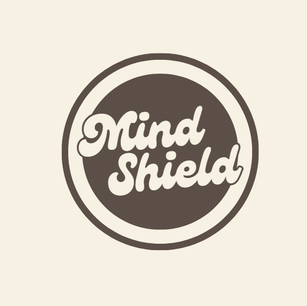

Projects

Habit Loop Fitness Device
Arduino-based wearable reinforcing workout habits.

Patient Matching AI Tool
Clinical AI pipeline for rare disease matching.

Aerodynamic Analysis (ANSYS Fluent)
CFD analysis of dual-element FS wing.

Mind Shield PTSD Software: Chrome Extension
Software for PTSD victims that reduces online triggers.